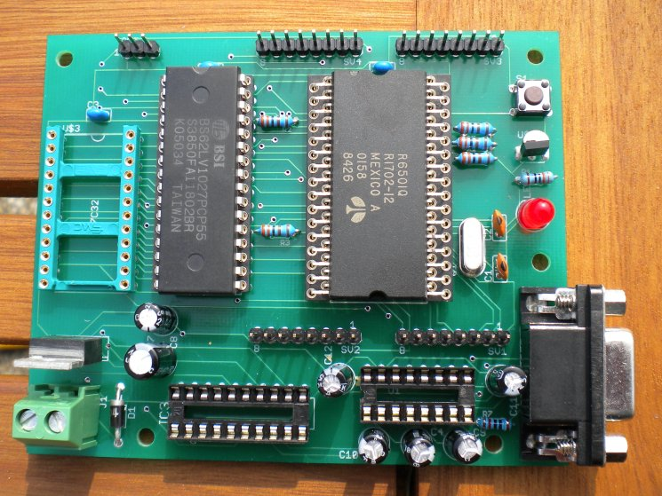

Somewhere around 2003 I bid on some Rockwell microcontrollers that came up on ebay and ended up with 19 of them. They sat around in my storage box until Christmas 2009 when I finally found the time to design a PCB for them. June 2010 I sent the PCB off to China for manufacturing and in due course five lovely boards came back.
I was just about to start assembling the board when I checked the data sheet and discovered that I'd designed it for a R6501 while the chips I had where R6541AQs with a completely different pin out. I tried sourcing R6501s from various electronics warehouses but they wanted an outragious amount of money for them. The boards have been sitting on my study book case since then.
A few weeks ago a couple of R6501Q chips came up for sale on eBay. I snapped them up for much less (including postage from California to the UK) than I had been quoted from the warehouses for a single chip. And during the Easter 2011 vacation I dug up all the components and soldered it all together. This is the result.
I have a couple of jobs left to complete. I need to program a 16V8 PLD handle the ROM/RAM chip selects, read and write signal generation, and the address translation for the banked RAM. I also need to write some firmware to properly initialise the device and provide a simple monitor application.
The Rockwell R6501 is a 6502 based microcontroller with four 8-bit I/O ports, a serial module and a small amount of built in RAM. A complete copy of the data sheet can be download here. One important difference with the 6502 is that the CPU stack is located on page zero rather than page one.
There where two devices in the R6501 family, a basic 1Mhz version and a 2Mhz 'A' version. The 'Q' on the end of the device name indicates a 64 pin QUIP (QUad Inline Package). Both can be driven from a 2 to 4 Mhz crystal oscillator which is internally divided to provide the main system clock source.
On reset the device expects only a 4K external ROM to be provided but by modifying some control registers the address space can be extended to the full 64K which is interleaved with the internal hardware registers and RAM. To do this pins on port C take on the role additional address lines. The chip has a built in serial communications module which takes control of some pins on port A.
My design comprises of a simple 5V power supply, a reset circuit (using a DS1813), an RS232 transceiver and a crystal oscillator along with 4K of RAM and 128K of RAM. Although the schematic (click here to download) shows a 4Mhz crystal I used a 3.6864Mhz to minimise baud rate error.
I have included support for software generated CTS/RTS handshaking on the board using another couple of pins on port A. Ports B and D have been left free for interfacing.
The use of a 128K SRAM chip saves board space (compared to two 32K SRAMS) and allows me to experiment with bank switching. The PLD also allows the ROM to be disabled after its contents have been copied into SRAM.
I will publish the source code for the boot ROM here when it is finalised.
| << Back |
|
Contents | Next >> |
© Copyright 2011 Andrew John Jacobs. All rights reserved.
All trademarks and service marks are the properties of their respective owners.